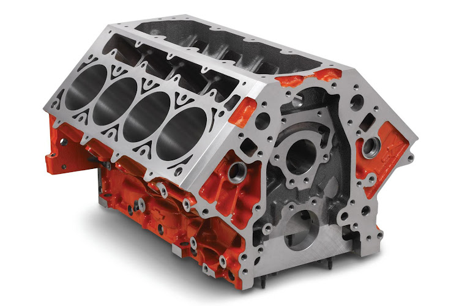
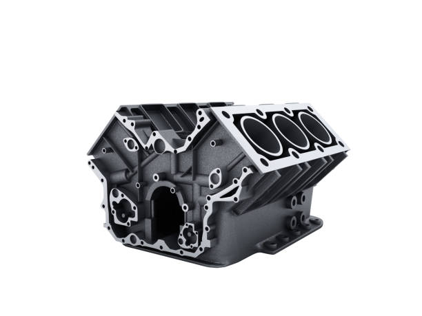
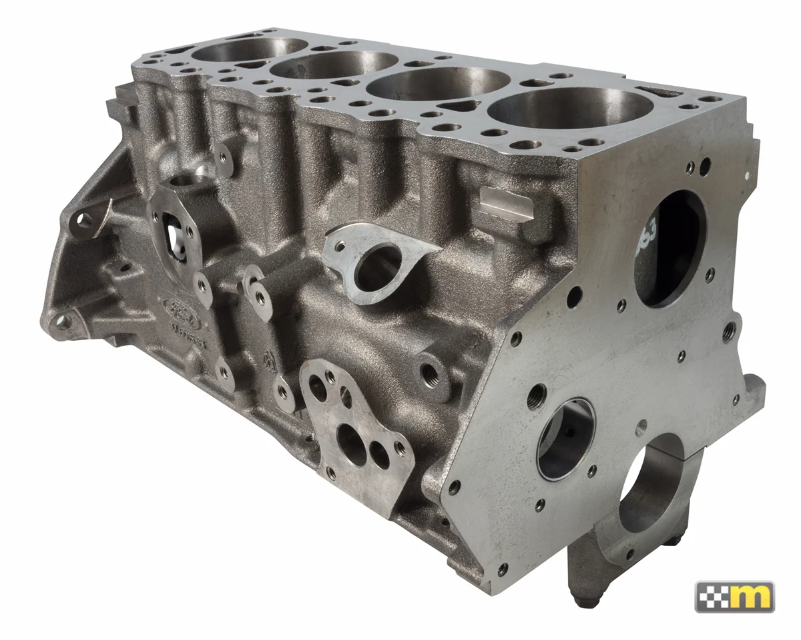

The most powerful of the 3 most common engine types.
The 8 cylinder engine can be seen in many muscle, sports, and even super cars.

6 Cylinders
An upgrade to the 4 cylinder engine usually found in mid-size sedans and suvs.
The 6 cylinder engine has more power than the 4 cylinder engine while having better fuel economy than
the 8 cylinder engine.

4 Cylinders
The most common engine cylinder count in most small to mid-size cars today.
The 4 cylinder engine has the best fuel economy of the 3 most common engine types
while also having the least power.

Generally, an engine with more cylinders can produce more power.
Most cars on the road today have 4 or 6 cylinders, but why is this the case?
Well, while having more power can be nice, engines that generate more power consume fuel at a higher rate.
For this reason and a few others, the 4 cylinder engine as well as the 6 cylinder engine have become the most common in our society today.
To illustrate this point, this martini glass narrative visualization will guide you through the fuel
efficiency of the 3 most common engine cylinder counts.
Data Source: https://flunky.github.io/cars2017.csv